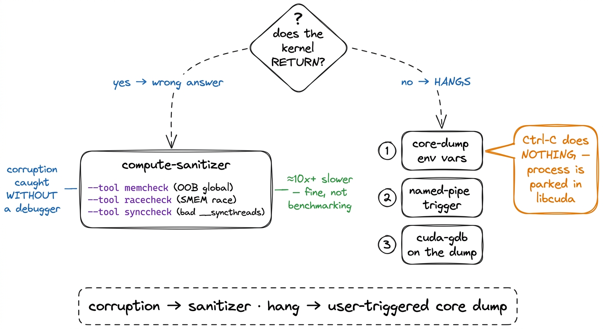
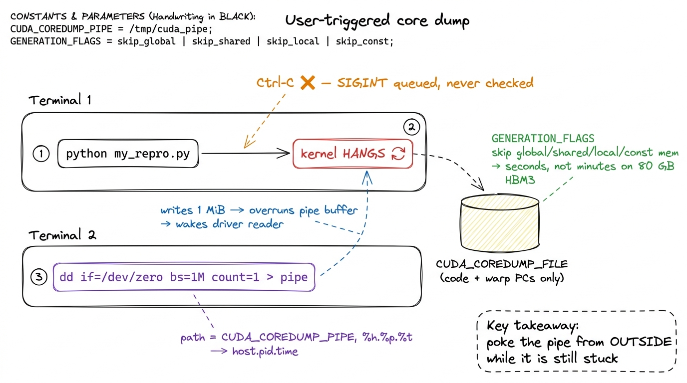
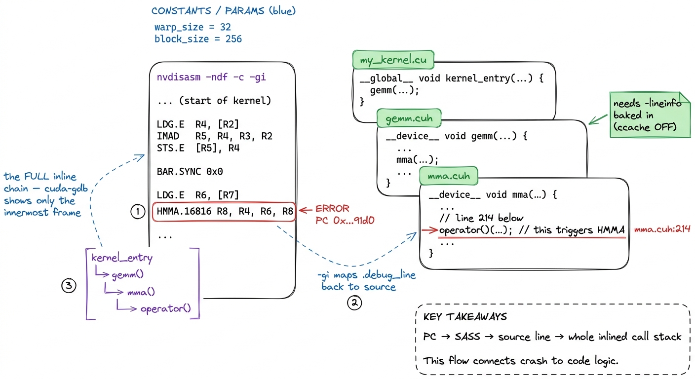

Debugging kernels: the vLLM workflow DEBUG
A GPU kernel fails in a way that CPU code almost never does: silently, asynchronously, and thirty stack frames away from where you launched it. You write kernel<<<grid, block>>>(...), the launch returns immediately, your Python keeps running, and only much later — at the next synchronization point, or when an output tensor comes back full of NaN — do you learn something went wrong. By then the thread that scribbled out of bounds is long gone, its registers recycled, its warp retired. This article is the workflow I actually use when that happens, lifted almost verbatim from the vLLM team's debugging notes and hardened on real hangs.1 The primary source is the vLLM blog post "Improved CUDA debugging" (2025-12-03). I reproduce their environment-variable soup and command lines here because getting a single flag wrong makes the whole thing silently do nothing.
The shape of the problem is worth stating plainly. There are two failure modes, and they need two different tools. A kernel that reads or writes memory it doesn't own — an out-of-bounds index, a race on shared memory — usually finishes, just with corrupt results; you catch those with compute-sanitizer. A kernel that hangs — a deadlocked barrier, an infinite loop on one thread, a __syncthreads() that not every thread reaches — never returns at all, and Ctrl-C is useless against it. That second case is the hard one, and most of this article is about it.
First line of defense: compute-sanitizer
Before any of the heavy machinery, run the kernel under compute-sanitizer. It is the CUDA equivalent of Valgrind and AddressSanitizer rolled together, and it catches the majority of memory bugs without a debugger at all. You invoke it as a wrapper around your normal command:
compute-sanitizer --tool memcheck python my_repro.py
compute-sanitizer --tool racecheck python my_repro.pyThe memcheck tool reports out-of-bounds and misaligned global-memory accesses, giving you the offending thread and, if line info is present, the source line. The racecheck tool inspects shared memory (SMEM) for hazards — two warps writing the same bank without a __syncthreads() between them, the classic read-after-write race that produces results that are usually right and occasionally, maddeningly, not. compute-sanitizer also ships initcheck (reads of uninitialized global memory) and synccheck, which flags illegal barrier usage where not all threads in the barrier's scope participate — on a divergent-barrier bug synccheck often names the culprit faster than anything else. Expect a slowdown of 10x or more — that is fine; you are not benchmarking, you are asking a yes/no question.

figure rendering · Two failure modes, two tools. Decide which branch you are on before reWhy Ctrl-C fails on a hang
When a kernel hangs and you hit Ctrl-C, nothing happens, and understanding why tells you what tool you actually need. The Python process that launched the kernel is not running Python — it is blocked inside the CUDA driver, waiting for a low-level API call (a synchronize, or the implicit sync at the next copy) to return control. SIGINT is delivered to the Python interpreter, but the interpreter is parked in a C call frame deep in libcuda, and it will not check for the signal until that call returns. It never returns, because the GPU is spinning. So the signal sits in a queue, ignored, and you are staring at a frozen terminal with no traceback, no line number, nothing.
The insight from the vLLM workflow is that you must ask the GPU itself to produce a snapshot while it is still stuck. CUDA supports exactly this: a user-triggered core dump. You arm the mechanism with environment variables before launch, and then, from a second terminal, you poke the running process and it writes out the full device state — every warp's program counter, the SASS it is executing, the source line if line info is present.
Arming the core dump
Set this block of environment variables in the shell that will run your repro. Every one earns its place:
export CUDA_ENABLE_USER_TRIGGERED_COREDUMP=1
export CUDA_ENABLE_COREDUMP_ON_EXCEPTION=1
export CUDA_COREDUMP_SHOW_PROGRESS=1
export CUDA_COREDUMP_PIPE="/tmp/cuda_coredump_pipe_%h.%p.%t"
export CUDA_COREDUMP_FILE="/tmp/cuda_coredump_%h.%p.%t"
export CUDA_COREDUMP_GENERATION_FLAGS='skip_nonrelocated_elf_images,skip_global_memory,skip_shared_memory,skip_local_memory,skip_constbank_memory'CUDA_ENABLE_USER_TRIGGERED_COREDUMP=1 is the switch that lets an external signal produce a dump; CUDA_ENABLE_COREDUMP_ON_EXCEPTION=1 additionally captures crashes (the OOB case, if the sanitizer didn't already tell you enough). The %h.%p.%t in the filenames expand to host, PID, and timestamp, which matters the moment you have more than one process alive. The CUDA_COREDUMP_GENERATION_FLAGS line is the one that keeps this practical: a full device core dump on an 80 GB H100 tries to serialize HBM3 global memory and you will wait for what feels like forever.2 This is the single most important flag for iteration speed. skip_global_memory alone drops the dump from "the entire 80 GB working set" to just the code and register/PC state you actually need to locate a hang. If you later discover you do need to inspect a global buffer, drop that one token and re-run — but start skipped. Skipping global, shared, local, and constant-bank memory leaves you with the thing you came for — where every warp is stuck — and turns a multi-minute dump into a couple of seconds.
Then run the repro normally in that shell:
python my_repro.pyTriggering the dump through a named pipe
CUDA_COREDUMP_PIPE points at a FIFO (first-in-first-out named pipe) that the driver watches; writing any bytes into it triggers the dump. Because the filename template already resolved, the actual pipe path for your run is something like /tmp/cuda_coredump_pipe_gpu-node.31415.1733251200. From a second terminal, once the kernel is visibly hung, kick it:
dd if=/dev/zero bs=1M count=1 > /tmp/cuda_coredump_pipe_gpu-node.31415.1733251200Use dd, not echo. A bare echo writes a handful of bytes that can sit in the pipe's buffer without ever being flushed to the reader, and the trigger silently doesn't fire — you wait, nothing dumps, and you conclude the mechanism is broken when it simply never saw your write. The dd if=/dev/zero bs=1M count=1 above pushes a full megabyte, which comfortably exceeds the pipe buffer and forces the driver-side reader to wake. With CUDA_COREDUMP_SHOW_PROGRESS=1 set, you'll see the dump being written on the first terminal, and a CUDA_COREDUMP_FILE lands on disk.

figure rendering · The two-terminal dance. Terminal 1 hangs; Terminal 2 pokes the named pReading the dump in cuda-gdb
Now the fun part. Load the dump into cuda-gdb, which understands device core files:
cuda-gdb
(cuda-gdb) target cudacore /tmp/cuda_coredump_gpu-node.31415.1733251200cuda-gdb drops you at the exact kernel and, warp by warp, the instruction each one was executing when you froze it. info cuda kernels lists what was resident; cuda kernel N and bt walk you into a specific one, and info symbol $errorpc resolves the faulting program counter to a name. If the hang is a divergent barrier — some threads waiting at a __syncthreads() the rest of the warp will never reach — this is where it becomes obvious, because you can see the two groups of threads parked at different program counters.3 Divergence-induced deadlock is a whole category of hang: if a __syncthreads() sits inside a branch that not all threads in the block take, the ones that took it wait forever for siblings that already moved on. See SIMT and divergence for why the hardware lets you write this bug in the first place. The catch: without line information, all you get is a raw program-counter address and a wall of SASS. Useful, but not yet actionable. To turn a PC into a source line, the binary has to carry a map.
Making SASS point back at source: -lineinfo
That map comes from compiling with line info. The cleanest way to force it across a build system you don't fully control is the prepend-flags escape hatch:
export NVCC_PREPEND_FLAGS='-lineinfo'NVCC_PREPEND_FLAGS injects -lineinfo into every nvcc invocation, so you don't have to hunt through CMake or setup.py to find where the compile lines live. -lineinfo embeds a .debug_line section that ties each SASS instruction back to a source file and line, without the full -G device-debug build that disables optimizations and changes timing (and can make a race disappear). This is the PTX vs SASS boundary made debuggable: you keep the optimized SASS the GPU actually runs, but now every instruction knows where it came from.4 Reach for the full -G device-debug build only as a last resort. It disables device-side optimization, bloats register usage, and changes kernel timing — which routinely makes a race or a marginal deadlock vanish, leaving you debugging a program that no longer misbehaves. -lineinfo keeps the real binary; -G gives you a different one.
Disable ccache — or the flag does nothing
Here is the trap that swallows an afternoon. You export NVCC_PREPEND_FLAGS='-lineinfo', you rebuild, you reload the dump — and there is still no line information. The reason is ccache. A compiler cache keys on the source and the command line it recognizes, and it does not always treat the prepended flag as a cache-key change, so it happily hands back the previously compiled object with no line info baked in. The fix is to take the cache out of the loop entirely for the debug rebuild:
export CCACHE_DISABLE=1
# then force a clean recompile of the offending translation unit5 The failure is worse than a no-op because it is convincing: the build succeeds, the flag is set, and everything looks right — yet the cubin is byte-for-byte the old one. Any time a compiler flag "isn't taking," a stale cache is the first suspect. Blow the cache away and rebuild before you doubt the flag. Rebuild clean, and the .debug_line section is finally present in the cubin.
The full inline call stack: nvdisasm -gi
Even with line info, cuda-gdb's default view has a real limitation: at a given PC it shows only the last inline expansion. In modern kernels — CUTLASS, FlashAttention, anything template-heavy — a single SASS instruction can be the fused result of a dozen inlined function calls, and knowing only the innermost one tells you which primitive blew up but not the call path that led there. nvdisasm recovers the whole chain. First find the offending PC in cuda-gdb, then disassemble the cubin with source and inline annotations:
nvdisasm -ndf -c -gi /path/to/kernel.cubin > disasm.txt
grep -C20 <ERROR_PC_HEX> disasm.txtThe flags: -c prints only code sections, -ndf disables the dataflow analyzer (faster, and you don't need its control-flow graph here), and the important one, -gi, annotates the disassembly with .debug_line source lines plus the full function-inlining info. Around your error PC you now see the complete inline stack — operator() → mma → gemm → your kernel entry — mapped to exact source lines, which is what actually lets you fix the bug rather than just locate the crater. When one cubin holds several kernels the raw PC can be ambiguous; pull the ELF section offset with cuobjdump -elf kernel.cubin | grep <kernel_name>, then scope the disassembly to that function with nvdisasm -ndf -c -gi -fun 0x<OFFSET> kernel.cubin so you're reading the right one.

figure rendering · The payoff. `nvdisasm -gi` turns a bare program counter into the exactnvdisasm -gi turns a bare program counter into the exact source line and the full chain of inlined calls that produced it.The workflow, end to end
Put together, the loop is short and it is the same every time. Reproduce the failure in the smallest script you can. If the kernel returns with wrong numbers, run compute-sanitizer — memcheck for out-of-bounds, racecheck for shared-memory races — and most days it names the line and you are done. If the kernel hangs, arm the core-dump environment variables (skipping global/shared/local memory so the dump takes seconds), launch, then from a second terminal push a megabyte through the named pipe with dd. Load the resulting core into cuda-gdb with target cudacore. If all you see is a raw PC, rebuild with NVCC_PREPEND_FLAGS='-lineinfo' and CCACHE_DISABLE=1, and re-dump. Finally, when the crash lives inside a tower of inlined templates, nvdisasm -ndf -c -gi on the cubin gives you the complete call stack that cuda-gdb alone withholds.
None of this makes GPU debugging pleasant, but it makes it finite. The reason a hang used to eat a day was never that the information wasn't there — the frozen warps carry their own PCs, the cubin carries its own line table. It was that the obvious move, Ctrl-C, is precisely the move that cannot work, and everyone tries it first. Once you internalize that a stuck GPU has to be snapshotted from the outside while it is still stuck, the rest is just knowing which six environment variables to set. For the failures that don't hang — the subtle numerical drift, the occupancy cliff, the phantom copy — the tool of choice is a profiler, not a debugger, and that is the subject of the benchmark methodology and kernel-launch anatomy articles.